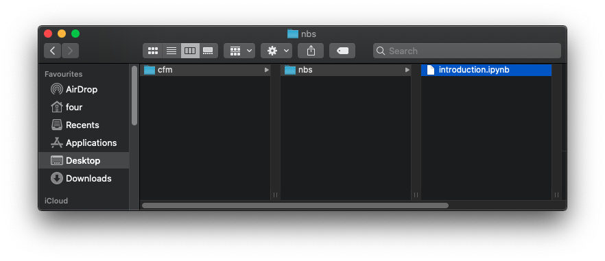

Tutorial#
You will here consider a specific problem of a general type. You will not concentrate too much on the writing of the code itself. Instead this chapter concentrates on how you can write the code as software that will do more than just solve the specific problem. It will be able to be used for further problems of the same type.
Problem
Consider a Markov chain model of the Board Game “Snakes and Ladders”:
what is the shortest number of turns that are possible to win?
what is the average number of turns?
To solve this problem we will make use of the Python library numpy which is
discussed in the corresponding chapter: Numpy. This library allows us
carry out efficient numerical calculations.
The problem we are considering is in fact an application of a mathematical object from probability called a Markov Chain which we will not go into in detail here however the relevant ideas are that the probability of being in the 100th square after \(k\) turns can be written down as:
where:
and \(P\in\mathbb{R}^{100 \times 100}\) where \(P_{ij}\) represents the probability of being in the \(i\)th square and going to the \(j_th\) square after rolling the dice.
There are snakes and ladders between the squares as given in Table Snakes and Ladders.
Snake or Ladder |
From |
To |
|---|---|---|
Ladder |
3 |
19 |
Ladder |
15 |
37 |
Ladder |
22 |
42 |
Ladder |
25 |
64 |
Ladder |
41 |
73 |
Ladder |
53 |
74 |
Ladder |
63 |
86 |
Ladder |
76 |
91 |
Ladder |
84 |
98 |
Snake |
11 |
7 |
Snake |
18 |
13 |
Snake |
28 |
12 |
Snake |
36 |
34 |
Snake |
77 |
16 |
Snake |
47 |
26 |
Snake |
83 |
39 |
Snake |
92 |
75 |
Snake |
99 |
70 |
The matrix \(P\) will look like:
Note that because of the ladder on square 3: \(P_{14}=0\) and \(P_{1, 20}=1/6\). The first row/column of \(P\) corresponds to the state of not being on the board.
A csv file containing this matrix \(P\) can be found at
10.5281/zenodo.4236275.
To be able to answer the first question we will write a function to compute \(\pi P ^ k\) for arbitrary \(\pi\), \(k\) and \(P\):
def get_long_run_state(pi, k, P):
"""
For a Markov chain with transition matrix P and starting state vector pi,
obtain the state distribution after k steps.
This is done by computing pi P ^ k
Parameters
----------
pi : array
Starting state vector.
k : int
Number of iterations.
P : array
Transition matrix
Returns
-------
array
The state vector after k iterations
"""
return pi @ np.linalg.matrix_power(P, k)
For the second question we are going make use of a theoretic result which is that if \(P\) is of the form:
In this case the fundamental matrix is defined by:
The fundamental matrix of an absorbing Markov chains has a number of potential applications. One of which is to calculate the expected number of steps for the Markov chain to be absorbed given by:
where \(\mathbb{1}\) is a column of 1s.
To be able to code this we want to write a function to compute \(t\) but this requires “extracting” \(Q\) from \(P\):
def compute_t(P):
"""
For an absorbing Markov chain with transition rate matrix this computes the
vector t which gives the expected number of steps until absorption.
Note that this does not assume P is in the required format.
Parameters
----------
P : array
Transition matrix
Returns
-------
array
Number of steps until absorption
"""
indices_without_1_in_diagonal = np.where(P.diagonal() != 1)[0]
Q = P[indices_without_1_in_diagonal.reshape(-1, 1), indices_without_1_in_diagonal]
number_of_rows, _ = Q.shape
N = np.linalg.inv(np.eye(number_of_rows) - Q)
return N @ np.ones(number_of_rows)
We are in fact going to modularise that function. It does 3 things:
Extracts the matrix \(Q\) from \(P\);
Computes \(N\);
Computes \(t\).
All of those tasks could be useful in their own right so we are going to break up that function into three separate functions:
def extract_Q(P):
"""
For an absorbing Markov chain with transition rate matrix P this computes the
matrix Q.
Note that this does not assume that P is in the required format. It
identifies the rows and columns that have a 1 in the diagonal and removes
them.
Parameters
----------
P : array
Transition matrix
Returns
-------
array
The matrix Q
"""
indices_without_1_in_diagonal = np.where(P.diagonal() != 1)[0]
Q = P[indices_without_1_in_diagonal.reshape(-1, 1), indices_without_1_in_diagonal]
return Q
def compute_N(Q):
"""
For an absorbing Markov chain with transition rate matrix P that gives
matrix Q this computes the fundamental matrix N.
Parameters
----------
Q : array
The matrix Q obtained from P
Returns
-------
array
The funamental matrix N
"""
number_of_rows, _ = Q.shape
N = np.linalg.inv(np.eye(number_of_rows) - Q)
return N
This now allows us to redefine compute_t in a simpler way:
def compute_t(P):
"""
For an absorbing Markov chain with transition rate matrix this computes the
vector t which gives the expected number of steps until absorption.
Note that this does not assume P is in the required format.
"""
Q = extract_Q(P)
N = compute_N(Q)
number_of_rows, _ = Q.shape
return N @ np.ones(number_of_rows)
Attention
All the code we have written so far is generic in nature so would be better placed somewhere that it can be used for different project.
We are going to put these three functions (and the necessary import numpy as np statement) in an absorption.py file as can be seen in
The three modularised functions in a python file. and save it in a directory called snakes_and_ladders.
{kind=link}

Fig. 33 The three modularised functions in a python file.#
We will now use everything we have done so far:
Download, and extract the data available at 10.5281/zenodo.4236275. Put the
main.csvfile in thesnakes_and_laddersdirectoryOpen a Jupyter notebook and call it
main.ipynbalso in thesnakes_and_laddersdirectory.
This should look like the following:
snakes_and_ladders/
|--- absorption.py
|--- main.csv
|--- main.ipynb
We can now use all of the code we have written in the notebook, first we can
import the functions in absorption.py like any other python library:
import absorption
We will also import numpy and use it to read the data file:
import numpy as np
P = np.loadtxt("main.csv", delimiter=",")
Attention
The above commands work because the 3 files are all in the same directory.
Now to compute the shortest number of turns:
k = 1
pi = np.zeros(101)
pi[0] = 1
while absorption.get_long_run_state(pi, k, P)[-1] == 0:
k += 1
k
6
We see that it is possible to arrive at the last square in 6 turns.
Now to compute the average length of the game:
t = absorption.compute_t(P)
t[0]
np.float64(43.49196169497175)